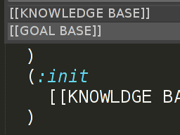

PDDLMemory
Sublime Plugin
Notes
Install PDDLMemory
Copy the PDDLMemory folder to a local folder where you have read and write
access. PDDLMemory requires Python 2.x installed on a Linux machine.
Configure PDDLMemory
Make sure to go trough the config file (PDDLMemory/pddlmemory/config.py) and adjust the pddlmemory_path variable.
pddlmemory_path = "/path/PDDLMemory/pddlmemory/"
The variable current_domain_name should be set to the name of the current domain (default: appartment).
There are two important paths:
1) /path/PDDLMemory/
2) /path/PDDLMemory/pddlmemory/
1) contains everything related to the module including binaries (bin) and documentation (docs).
2) contains the actual code of the module.
Extend $PYTHONPATH variable
The environment variable $PYTHONPATH should include the path to PDDLMemory. It can be set permanently in the .bashrc or .profile file.
export PYTHONPATH="/path/PDDLMemory/ : ..."
Test the PDDLMemory Installation
At this point PDDLMemory should be installed and you can test the installation using the provided appartment domain. You can run the launcher script memoplan from the command line
./bin/memoplan_csv --list-active-items
This command lists all the chunks that are active in memory.
Planning on the current domain is done with the -s option (planning strategy):
Some examples:
./bin/memoplan_csv -s directed-rehearsal
./bin/memoplan_csv -s progressive-activation (experimental)
Generated plans are stored in the output folder:
/pddlmemory/output/<domain name>
Install SublimeText Plugin
Copy the PDDLMemory plugin folder to SublimeText's Packages folder (Preferences > Browse Packages...)
Configure SublimeText Plugin
Open the PDDLMemory.sublime-settings file and set the variable pddlmemory_domain_folder to point to the current domain folder, e.g:
/path/PDDLMemory/pddlmemory/domains/appartment/
Finally, restart SublimeText.
It's recommended to always restart SublimeText after making changes to the plugin configuration file.
Test SublimeText Plugin
If the plugin has been recognized by SublimeText, you should now be able to see the PDDLMemory-Commands in the Command Palette (Ctrl+Shift+P).
PDDLMemory
Sublime Plugin
Notes
PDDLMemory can be run in two modes:
CSV
./bin/memoplan_csv -s directed-rehearsal
The _csv mode generates a CSV file, which is useful for analyzing the generated data with another tool.
VIZ
./bin/memoplan_viz -v -s directed-rehearsal
The _viz mode generates a graph which displays the remaining goals as a function of the number of iterations.
The _viz mode requires some additional libraries for plotting (matplotlib, numpy, scipy).
Results
Both PDDLMemory modes produce a 'plan' file which contains a plan that is obtained by concatenation of subplans produced py PDDLMemory.
Note:The produced plan may be a partial plan, if not all goals have been solved. This can be checked using the CSV file.
The _csv mode produces a csv file with information about the plan length, planing time, success of planning iterations, number of unsolved goals and the active chunks for every iteration (see screenshot)
Further parameters (pddlmemory/config.py)
The variables activation_limit, maximum_iterations and strengthening_factor can be tweaked to change the behavior of PDDLMemory. These parameters are explained in comments within config.py
Known limitations
PDDLMemory was developed to illustrate the concept of using an STM in planning. Currently only a basic set of PDDL commands is supported and encoding of functions in chunks is not yet implemented.
It is recommended to start with a simple
domain/problem pair and to take a look at the provided "appartment" and "hacker-world" domains.
Getting Results
Results (plan and csv files) are written to the output directory of PDDLMemory:
PDDLMemory/pddlmemory/output/domain/plan
PDDLMemory/pddlmemory/output/domain/results.csv
PDDLMemory
Sublime Plugin
Notes
Creating a domain folder
First a domain folder should be created in pddlmemory/domains.
It should contain two template files which always have the names:
Domain file: domain-template.pddl
Problem file: problem-template.pddl
The domain-template.pddl is just a traditional PDDL domain file without modifications.
The problem-template.pddl is a PDDL problem file which is changed as explained in the next steps.
A PDDLMemory domain folder is structured as follows:
+- Domain
domain-template.pddl
problem-template.pddl
+- Chunk1
+- facts
+- goals
+- Chunk2
+- facts
+- goals
(+- base
+- facts
+- goals )
You can start by copying a traditional PDDL domain/problem pair into the new domain folder and then rename
your-domain.pddl into domain-template.pddl
your-problem.pddl into problem-template.pddl.
Configuring the domain (pddlmemory/config.py)
PDDLMemory should be configured to use the new domain. The variable current_domain_name should be set to the name of the new domain folder created in the previous step.
current_domain_name = "my-new-domain"
Open the PDDLMemory.sublime-settings file and set the variable pddlmemory_domain_folder to point to the new domain folder:
/path/PDDLMemory/pddlmemory/domains/my-new-domain/
Finally, restart SublimeText.
Creating chunks
Open the problem-template.pddl in SublimeText. Using the Command Palette (Ctrl+Shift+P) you can create a chunk with the PDDLMemory-chunk command.
Select some of the predicates from the (:init) clause. Multiple selections are also possible in SublimeText. Then, execute the PDDLMemory-chunk command.
Fact knowledge is the knowledge that is contained within the (init:) clause in the PDDL problem file. All facts should be assigned to a chunk. The template is ready when no more predicates are contained within the (:init) clause.
Goal knowledge is the knowledge that is contained within the (goal:) clause in the PDDL problem file. All goal predicates should be added to a goal. The template is ready when no more predicates are contained within the (:goal) clause. Only the connecting (and...) clause should be left in the template.
Extending chunks
Facts can be added to an existing chunk using the PDDLMemory-add-facts command. Select some predicates from the (:init) clause and execute the PDDLMemory-add-facts command.
The PDDLMemory-add-goals command is used to assign goals to chunks. Select several goal predicates that you wish to
group as a single goal. Then using the PDDLMemory-add-goals command give a name to the goal and add it to an existing chunk.
Placing insertion marks

As a final step, two insertion marks should be inserted into the problem template. This is done using the PDDLMemory-insert-markers command. The [[KNOWLEDGE BASE]] is inserted into the (:init) clause and [[GOAL BASE]] is inserted into the (:goal) clause.
Insertion marks tell PDDLMemory where to insert fact and goal knowledge during the planning process. The final form of the template should look like this:
(:init
[[KNOWLEDGE BASE]]
)
(:goal
(and
[[GOAL BASE]]
)
)
When ready with modeling, run PDDLMemory as described in 2. to test the new domain and generate some results.
{kind=link}
{kind=link}
{kind=link}
{kind=link}
{kind=link}